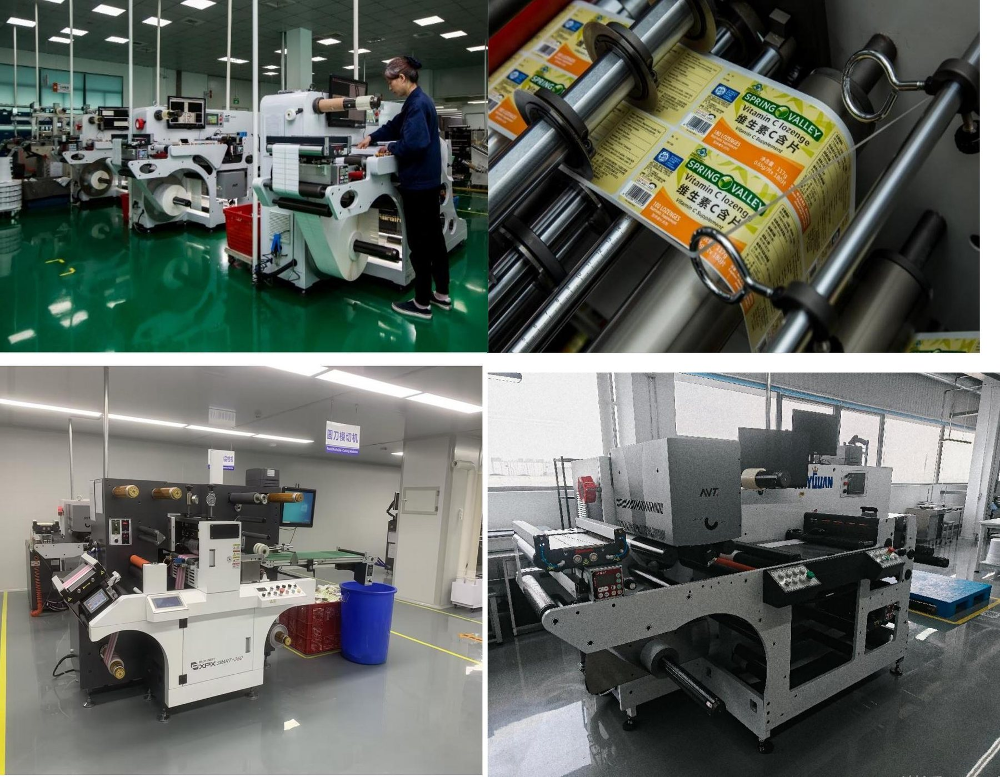

01
人工逐件扫码，盘一次库要好几天
手写登记 + 月度全盘，一次盘库停两天工；盘点频次上不去，库存就只能是"上个月的库存"。
RFID 的做法
整箱、整托一次群读，手持机走过货架即可完成全盘或抽盘，不用开箱、不用对条码，盘点从"月度事件"变成"每天可做"。
说明：以上效率与识别率为同类项目的实测区间，实际结果取决于场地结构、货品材质、标签位置与读写器点位密度。我们按勘测结果给出书面验收指标，不用行业最大值做承诺。
条码能干的事，到"批量、隔箱、冷链、可追溯"这四件事上就到头了。 下面是仓库和供应链里最常见的六个卡点，以及 RFID 各自的解法。
手写登记 + 月度全盘，一次盘库停两天工；盘点频次上不去，库存就只能是"上个月的库存"。
出入库数据滞后、漏登、错登，时间一长就变成积压、过期和损耗，而且追不到责任环节。
同一种货几个批次混放，谁先到期靠仓管员经验；一旦错发，就是整批报废加客诉。
没有完整追溯链、没有温湿度留痕、没有不可篡改的操作日志，飞行检查前只能临时补记录。
结霜、凝露、金属箱、液体包装，条码污损或反光就失效，普通 RFID 在这种环境下识别率也掉得厉害。
读写器、PDA、温湿度探头各有一套后台，数据零散，想看的报表要人工拼。
很多项目栽在中间层：几百个标签同时上报，数据乱序、重复、丢包，上层系统就成了一堆错账。 我们用工业级 EMQX 消息中台做缓冲，把这件事在架构上解决掉。
不替换现有 WMS / ERP / TMS，只做接口对接，改造量小、上线快。
自动入库、自动出库、自动盘点、批次溯源、效期预警、温湿度追溯、报表与可视化看板。
整套系统的稳定底座：全设备数据汇总、去重、过滤、缓存、断网续传。
弱网或断网时数据先存本地，联网后自动补传；误读、串读、重复上报在这一层被拦掉，上层拿到的永远是干净数据。
按货品材质和场地结构选型，这一层选错了，上面做得再好也读不准。
定制超高频 RFID 标签、抗干扰天线、固定式读写器、通道门、手持盘点 PDA、无源温感标签。
硬件谁都能买到，差别在于复杂场景读不读得准、断网会不会丢数据、上层系统拿到的数据干不干净。
针对金属货架、液体包装、冷链高湿环境做专项硬件优化，复杂场景识别率 ≥99.5%（按约定点位与标签选型实测）。
一次识别上百枚标签，整箱、整托批量盘点，收货与盘点效率提升 80% 以上。
边缘缓存机制，弱网或断网时数据先存本地，联网后自动补传，账面不会停在半天前。
系统自动过滤误读、串读与重复上报，同一件货不会因为被读三次就变成三件库存。
出入库、温湿度与设备日志永久留存，审计、合规与客诉追溯时能直接导出，不用凭记忆还原。
不替换现有 WMS / ERP / TMS，只做接口对接，老系统继续用，新能力长在上面。
医药和食品这两个行业，一个怕查、一个怕坏，对识别率和留痕的要求最狠。 这两个场景跑通了，其他仓储场景基本是同一套逻辑换个配置。
方案能不能落地，一半取决于标签选得对不对。下面是常用六类，湿 inlay 与复合标签并行—— 复合、写码与印面都在我们的标签产线上完成。
读取距离可达数米，支持多标签防碰撞群读，是仓储物流、零售盘点与资产管理的首选频段。
近场读取稳定、抗干扰强。读距短反而是优点——适合要求"贴近才认"的票卡、档案与工位管理。
inlay 与铜版纸、合成纸、PET 面材复合模切，出来就是能上贴标线的成品，表面还能四色印刷与喷可变码。
内置隔磁衬垫，贴着金属也能稳定识读，用于设备资产、钢瓶、工装夹具与车载管理。
过回流焊、烘烤与高温灭菌都不掉数据，用于 PCB 板、汽车零部件等高温工序的追溯。
芯片藏在吊牌纸卡里，一面做品牌展示，一面做门店盘点与防盗，收银台一次读完整篮商品。
频段决定读距、抗干扰能力与成本。拿不准就把货品材质、读距要求和场地照片发给我们，我们来匹配。
| 频段 | 典型频率 | 读取距离 | 特点 | 典型应用 |
|---|---|---|---|---|
| 低频 LF | 125 kHz | < 10 cm | 穿透液体与动物体能力强，读取速度慢 | 动物识别、门禁、工具防伪 |
| 高频 HF | 13.56 MHz | < 1 m | 近场稳定，抗金属与液体干扰较好 | 图书档案、票卡、产线工位 |
| 超高频 UHF | 860–960 MHz | 1–10 m | 远距离、批量防碰撞识读，主流商用频段 | 仓储物流、零售盘点、资产管理 |
| 有源 / 双频 | 2.4 GHz / 复合 | 30 m+ | 主动发射、可定位追踪，单价较高 | 车辆管理、人员定位、集装箱 |
同一套软件，配不同的标签和天线，成本能差一倍。我们先勘测再报价，不做"一套方案打天下"。
| 类别 | 配置内容 | 选型要点 |
|---|---|---|
| 超高频 RFID 标签 | 普通不干胶标签、抗金属标签、冷链防水标签、无源温感标签 | 按贴标表面（金属 / 液体 / 塑料 / 纸箱）与温度区间定芯片和天线；标签本身就是印刷品，版面可同时印条码与文字。 |
| RFID 读写设备 | 固定式 4 / 8 端口读写器、通道门读写设备、手持盘点 PDA | 出入库口用固定式或通道门，货架盘点用 PDA；端口数按天线点位数量反推。 |
| 专业天线 | 圆极化天线、定向窄波束天线、高增益抗干扰天线 | 货架密集、通道狭窄用窄波束减少串读；金属环境用抗干扰天线并调整极化方向。 |
| 物联网中台 | EMQX 消息中间件（数据传输、过滤、缓存、系统对接） | 部署在企业内网，数据不出厂；开源版与企业版按并发量选择。 |
方案里说的标签，最后要变成一卷一卷能直接上贴标机的成品。 这四道工序决定了到货能不能用、编码会不会错、读不出来该找谁。
芯片 inlay 与铜版纸、合成纸、PET 等面材复合模切，一次成型为不干胶成品标签。
EPC / SGTIN 编码与条码按序喷印，保证编码与芯片 TID 一一对应，支持客户号段规则。
出厂前逐枚灵敏度检测与读写校验，剔除不良芯片，到货即可上线使用。
品牌印刷、可变二维码与异形模切一体完成，标签既好看也能被读到。
合同里按这十二条写验收标准，避免"系统上线了但不知道算不算成功"。
RFID 项目失败多半不是硬件不行，是点位没勘测、验收标准没定。流程写死，才能避免这两件事。
看场地环境、货架结构、网络条件，确认业务流程与要对接的系统。
硬件选型、点位布局、网络拓扑、编码规则一次定清。
现场实测读距、抗干扰与群读性能，把验收指标写进方案。
硬件出厂测试、标签预写码、系统预部署，减少现场停机。
设备安装、布线、天线调试与网络部署，按不影响日常作业的时段施工。
EMQX 数据流转调试、业务系统接口对接、批量压力测试。
7–15 天试运行，排查漏读串读，把识别率调到验收线以上。
操作与运维培训、资料移交、项目终验，转入售后。
RFID 系统不是买回来就不用管的东西：标签会换批、点位会调整、系统要跟着业务改。售后条款写清楚，比承诺"终身免费"实在。
RFID 项目最常见的扯皮，是标签厂说读写器不行、集成商说标签不对。 我们两头都自己做，出了问题不用你先去分辨是谁的责任。

如果你的痛点里有"盘不清、查不出、留不下痕"，基本都在下面这几类里。 不在其中的场景也可以聊——RFID 的判断标准是货品与流程，不是行业名字。
告诉我们库房面积、货架类型、主要货品材质与要对接的系统，我们给一份带点位图和验收指标的方案。